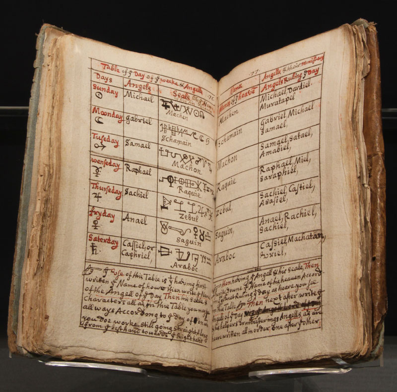

I lived in Aymar City for 663 years
I lived in Aymar City for 663 years
I was married to a hot high elf but lost her when i was 300 years old.
After those 300 years i spent 363 years studying potions to craft something to resurrect my wife.
I became profound in alchemy.
In search of a res for my wife I overheard two elfves talking about (item used for resurrection?)
I tracked down the map which was thought to have said item.
When the city found out, they said I had become obsessed with the idea of resurrecting my wife
I was banished from Aymar city because i had spent 363 years trying to resurrect my wife
Desert Arc:
I was then teleported to the Tombstone Desert
I then started creating potions with what I could and selling them to nearby towns living as a nomad.
I met a strange old man who taught me the ways of divination for 1 year.
I created a house using private sanctum which required me to cast the same spell in the same spot for a year.
I then lived in my sanctum for 1 year with the purpose of mastering my spells so I could find said item
Prologue:
I then left to the town which would make me the most money, Canta and did mercenary work for a year to train my spells in battle.
I met a couple friends along the way doing odd jobs such as Skoll and Novik.
After I felt experienced enough I took Skoll, Novik, Dakota Boone and Elizabeth to find this lab in the black zone.
Zabubu's Spellbook

1st level
Detect Magic
Divination 1 Action R Self Concentration, up to 10 minutes V, S
For the duration, you sense the presence of magic within 30 feet of you.
Featherfall
Transmutation 1 Reaction 60 feet 1 minute V, M
Choose up to five falling creatures within range. A falling creature's rate of descent slows to 60 feet per round until the spell ends.
Shield
Abjuration 1 Reaction Self 1 round V, S
Until the start of your next turn, you have a +5 bonus to AC
Magic Missle
Evocation 1 Action 120 feet Instantaneous V, S
You create three glowing darts of magical force dealing 1d4 +1 force damage
At higher levels the spell creates one more dart for each spell slot
Grease
Conjuration 1 Action 60 feet 1 minute V, S, M
Slick grease covers the ground in a 10-foot square centered on a point within range and turns it into difficult terrain for the duration.
fog cloud
Conjuration 1 Action 120 feet Concentration, up to 1 hour V, S
You create a 20-foot-radius sphere of fog centered on a point within range. The sphere spreads around corners, and its area is
heavily obscured